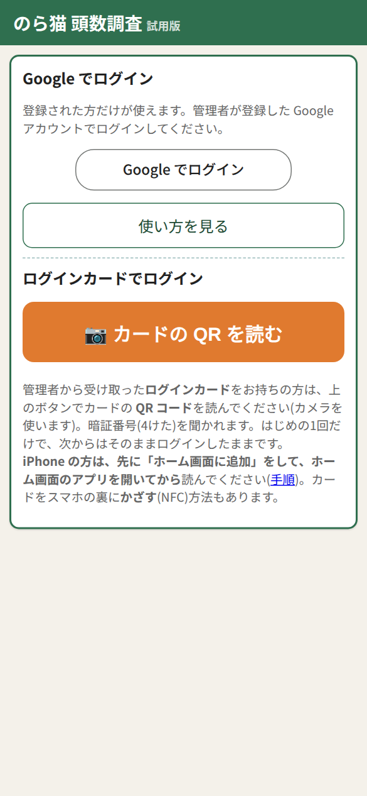
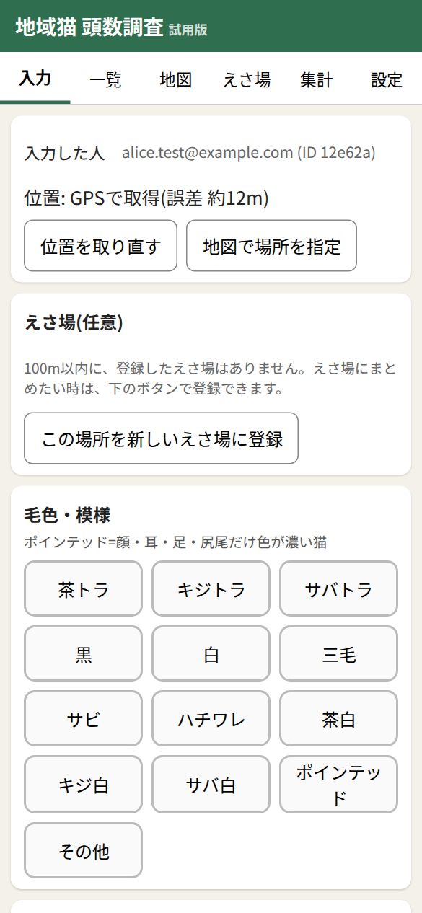
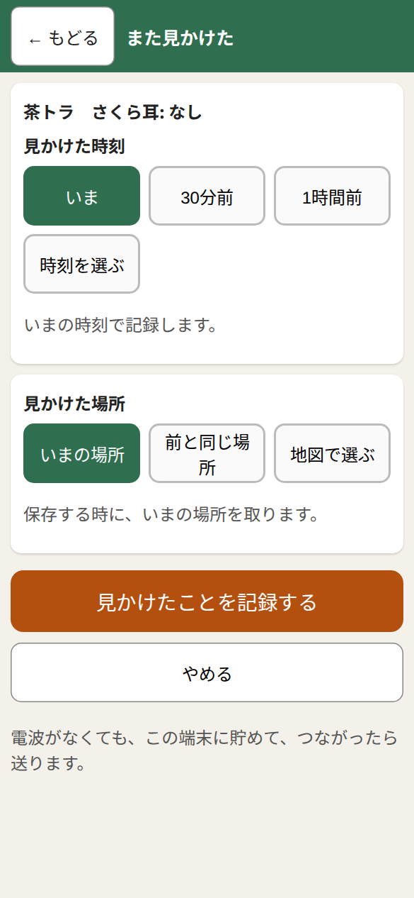
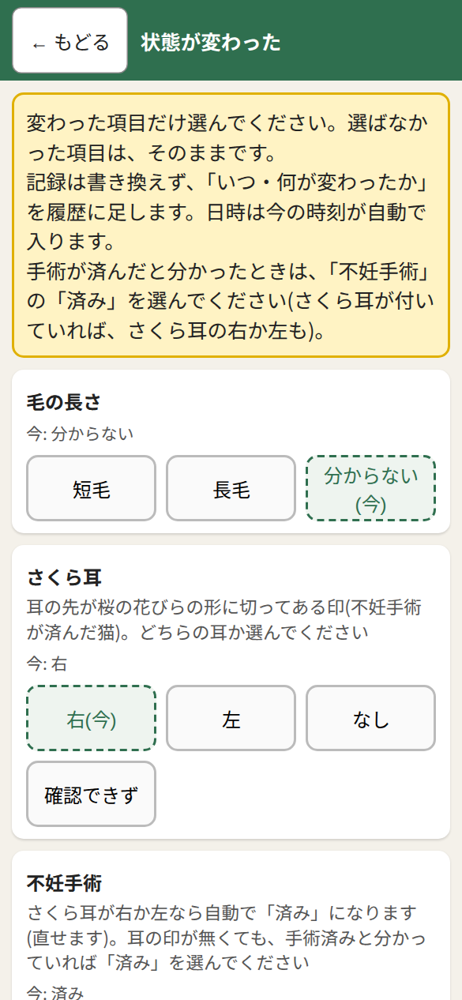
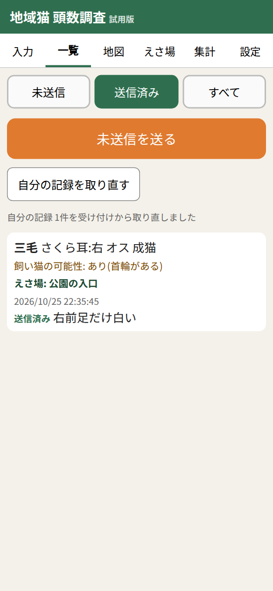
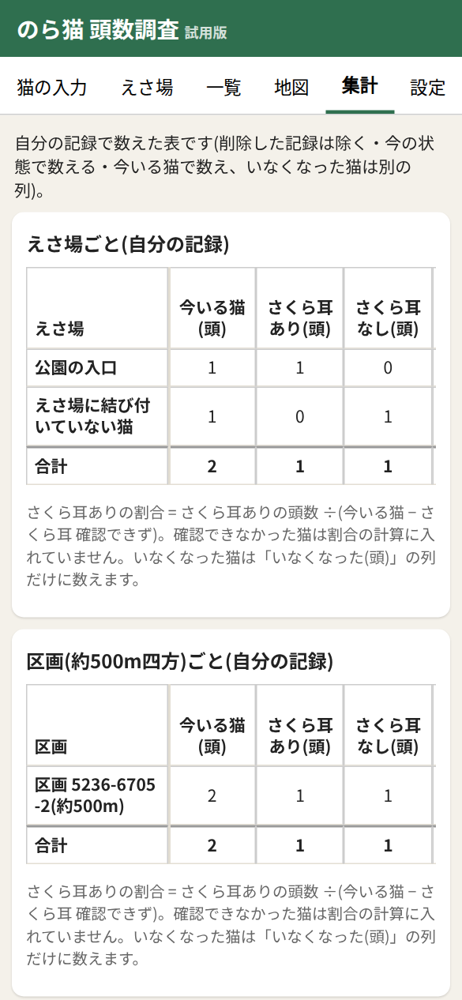
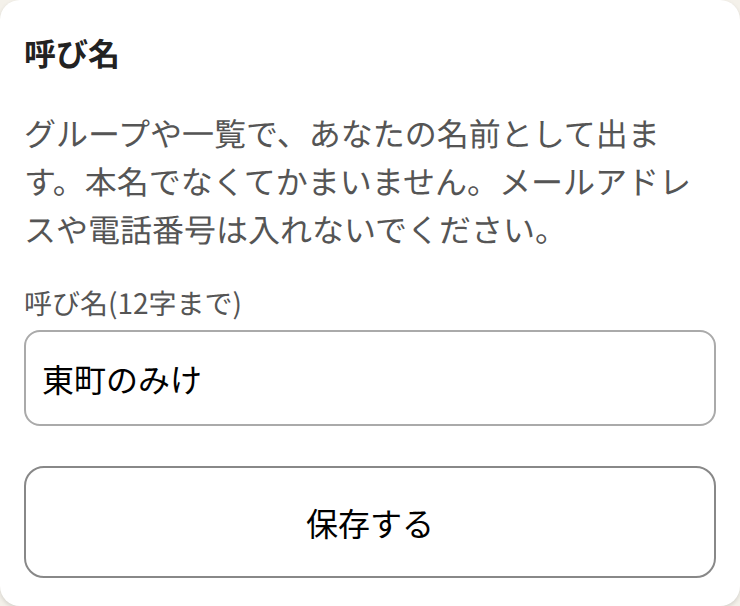

自分のスマホで猫の記録をつける人へ
はじめに
見かけた猫を、スマホで記録するアプリです。電波が無い所でも記録できます。電波があると、自動で送られます。
招待を受けた方へ: 連絡の窓口
先行版は、招待を受けた方だけがお試しいただけます。それ以外の方は、正式版の公開をお待ちください。招待を受けた方は、公式 LINE かメールで、次の2つを送ってください。管理者が登録します。
- ログインに使う Google のメールアドレス
- 呼び名(本名でなくてかまいません)
猫の居場所・写真・住所は送らないでください。
LINE でお問い合わせいただいた内容は、LINE ヤフー株式会社のサービス上に保存されます。猫の居場所・人の名前・写真など、個人を特定できる情報は送らないでください。
ログインカードをもらった人は、連絡は要りません。
集めた記録は、個人や細かい場所が分からない形にまとめたうえで、行政への提言や研究に使うことがあります。まとめる単位は、区や、約500m四方の区画ごとの頭数などです。
「Google でログイン」を押します。

管理者に登録した Google アカウントを選びます。
ログインカードをもらった人は、「カードの QR を読む」を押して読み、4けたの暗証番号を入れます。
補足: 先に、スマホの「ホーム画面に追加」をしておくと、次も続けて使えます。
猫を記録する
ホームの「猫を記録する」を押します。場所は自動で入ります。違う時は「地図で場所を指定」を押します。

毛の色、さくら耳(耳の先が切ってある印)、手術が済んでいるかを選びます。迷ったら「不明」で大丈夫です。
いちばん下の「この猫を保存する」を押します。
補足: 写真は3枚まで付けられます。「前に記録した猫ではありませんか?」と出たら、同じ猫かどうか見てください。
また見かけた
同じ猫は、新しく記録しません。足すだけです。
一覧で、その猫を押します。
緑の「また見かけた」を押します。

いつ・どこで見たかを選んで、保存します。
直す・状態が変わった
一覧で、その猫を押します。
入力の間違いは、「間違いを直す」で直します。
手術が済んだ・えさ場が変わった・いなくなった、は「状態が変わった」を押します。

補足: いなくなった猫も、削除しません。「状態が変わった」の「いなくなった」を使います。
間違えて作った記録は、猫の画面の「この記録を削除する」で消せます。消した記録は、30日の間は「削除したもの」から戻せます。
一覧と地図
下の「一覧」には、自分の記録がえさ場ごとに出ます。「地図」には、猫がいた場所が印で出ます。ピンクはさくら耳あり、青はなしです。
まだ送れていない記録には「未送信」と出ます。電波のある所で、自動で送られます。
下の「一覧」を押すと、この画面が出ます。

集計
ホームの「集計」を押します。今いる猫・手術が済んだ猫・いなくなった猫の数が出ます。その下に、えさ場ごとの表があります。
数えるのは「記録の数」です。同じ猫を二度記録すると、二度数えます。

呼び名を決める
「設定」を開き、「呼び名」の欄に12字までで入れて「保存する」を押します。本名でなくてかまいません。

グループや一覧に、その呼び名で出ます。空にして保存すると、整理番号(ID)で出ます。
メールアドレスや電話番号は入れられません。呼び名は自分で決めます。管理者は消すことだけできます。
管理者の人へ
「全体を見る」や「管理者」の役割を付ける時(役割を付けて人を足す時も)は、4桁の番号を入れます。役割を外す時は要りません。4桁を忘れた時は、艦長に連絡してください。
人を削除するには、先にその人を「止める」必要があります。削除すると、その人の猫の記録は名前を外して残り(調査の数には含めません)、元には戻せません。
人を足すと、足した管理者が記録に残ります(足した人の記録は、管理者にだけ見えます)。
メールの鍵
メールアドレスは鍵で暗号にして持ちます。管理の画面で「鍵を作る」を押すと、鍵の控えが1回だけ出ます。パスワード管理に保存してから「移し替え」を押します。控えはもう表示されません。
メールの鍵の控えから戻す(艦長の手): 鍵が消えて Google の人がログインできなくなった時に使います。
- Apps Script のエディタで、左の歯車「プロジェクトの設定」を開きます。
- 下の「スクリプト プロパティ」で「スクリプト プロパティを追加」を押します。
- 控えの1行目の「=」の左をプロパティ、右を値に入れます。2行目も同じようにします(前と同じ名前の物があれば、その値を直します)。
- 「スクリプト プロパティを保存」を押し、管理の画面で「鍵を作る」を押します。「確かめました」と出れば戻っています。
困った時
- 「登録されていません」と出る: 招待を受けている方は、「はじめに」の連絡の窓口へ知らせてください。招待を受けていない方は、正式版の公開をお待ちください。
- 位置が取れない: スマホの位置情報を許可してください。「地図で場所を指定」でも入れられます。
- 「電波が弱いようです」と出る: 記録は消えていません。電波のよい所で、自動で送られます。
- 一覧に猫が見えない: 上の絞り込みが「すべて」か見てください。えさ場の名前を押すと開きます。
- 画面がおかしい: ホームの「不具合を知らせる」で知らせてください。名前や住所は書かないでください。
問い合わせ
LINE の「ikezosアプリ問い合わせ」で受け付けています。
LINE で問い合わせるLINE を使わない方は、こちらへ。
support@ikezos.comLINE でお問い合わせいただいた内容は、LINE ヤフー株式会社のサービス上に保存されます。猫の居場所・人の名前・写真など、個人を特定できる情報は送らないでください。
© 2026 ikezos 無断の転用・複製を禁じます